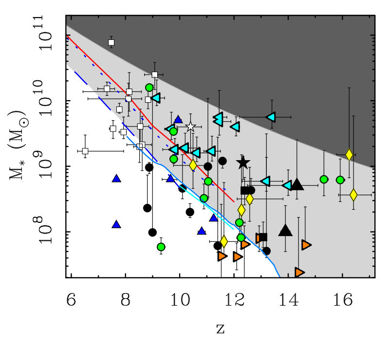

Key Question
What implications do overly bright early universe galaxies found by the James Webb Space Telescope (JWST) have on the existence of dark matter?
Definitions
Dark matter: A form of matter predicted to exist by the general theory of relativity that makes up 26.8% of the universe's total mass-energy content. Dark matter does not interact with light, but its gravitational influence has been used to explain phenomena like gravitational lensing and galactic rotation curves.
Lambda-CDM: The cosmological model most commonly used to explain the evolution of the universe. Lambda stands for dark energy (the energy hypothesised to be accelerating the universe's expansion), and CDM stands for Cold Dark Matter.
Redshift (denoted by z): As light moves through expanding space, its waveform gets stretched out, increasing its wavelength and making it redder. Redshift is a measure of this stretching, and is used to determine how far astrophysical objects are from us by relating the stretch in wavelength to distance traveled through expanding space. Higher redshift => object is further away => we are looking further back in time as we are seeing light that left the object millions or billions of years ago.
Initial Mass Function (IMF): An empirical function that describes the initial distribution of masses for a population of stars during star formation in a galaxy.
Metallicity: The abundance of elements present in a star that are heavier than Hydrogen and Helium.
Modified Newtonian Dynamics (MOND): An alternative theory of gravity that does not predict the existence of dark matter. Instead, it modifies Newton's laws of gravity at very low accelerations to explain observed phenomena like galactic rotation curves.
Photometric redshift: A redshift estimate obtained by measuring a galaxy's brightness across several broad color filters and fitting the resulting spectral energy distribution to templates. Less precise than spectroscopic redshift but easier to obtain.
Spectroscopic redshift: A precise redshift measurement obtained by identifying specific spectral lines in a galaxy's light and measuring their shift from known rest wavelengths.
Sources

Figure 6 from S. S. M. et al.

Figure 10 from S. S. M. et al.
J. J. Z. et al. — “Year and title blinded from debate judges.”
S. S. M. et al. — “Year and title blinded from debate judges.”
C. L. S. et al. — “Year and title blinded from debate judges.”
R. A., INAF — “Year and title blinded from debate judges.”
Exactly one of these debater's answers matches the answer of the expert who wrote the Key Question.
| Debater A: [Opening] The brightness of early universe galaxies is weak evidence towards falsifying the existence of dark matter (J. J. Z. et al.). | Debater B: [Opening] The brightness of early universe galaxies is strong evidence towards falsifying the existence of dark matter (S. S. M. et al.). |
| Debater B: [Question 1] A galaxy's brightness is directly correlated to the amount of stars present in it. This puts the mass of newly discovered galaxies (S. S. M. et al.) in a region that cannot be explained by the Lambda-CDM model. How do you explain the increased mass without questioning the assumed cosmology? | Debater A: [Question 1] There are multiple factors that could lead to overly bright early universe galaxies. What evidence do you have that directly falsifies the existence of dark matter? |
| Debater A: [Answer 1] The galaxies would be overmassive if their light was being produced by a population of stars that would be found in low-redshift galaxies. We cannot assume that the IMF remains the same for early universe galaxies as well. Assuming a top-heavy IMF that accounts for a larger number of brighter stars can bring down the mass estimate for the galaxies without changing the cosmology (C. L. S. et al.). | Debater B: [Answer 1] Figure 10 from S. S. M. et al. shows the fit of the Lambda-CDM model (red dotted lines) versus the fit of a model that uses Modified Newtonian Dynamics (MOND) (black solid lines) to a population of galaxies (different markers correspond to different studies where galaxies were discovered). It is clear that the Lambda-CDM model produces a very poor fit to high-redshift galaxies. The MOND based model does not contain dark matter, and produces a much better fit to the galaxies discovered by JWST. |
| Debater B: [Question 2] The IMF is based on the observations of the Milky Way and neighbouring galaxies, and current telescopes do not have the resolution to discern individual stars at high redshifts. Assuming a different distribution of stars for a whole population of galaxies needs a lot more data supporting the composition. How can you explain the observed brightness without these assumptions? | Debater A: [Question 2] Lambda-CDM models galaxies as evolving hierarchically through mergers and accretion over cosmic time. MOND-based models lack a comparably developed framework for cosmology and structure formation. Claiming Lambda-CDM is wrong in favour of MOND based on the fit to high-redshift galaxies requires more evidence. What evidence do you have? |
| Debater A: [Answer 2] The metallicity of the stars in the early universe will be much lower than what we observe at low redshifts. This is because early generations of stars enrich the gas in a galaxy with heavier metals, which then influences star formation and evolution of later generations of stars. A lower metallicity allows a star to grow larger, which can also make it significantly brighter. Assuming a lower metallicity for high-redshift galaxies can also explain the increased brightness (J. J. Z. et al.). | Debater B: [Answer 2] Figure 6 from S. S. M. et al. shows the mass-redshift relationship predicted by Lambda-CDM, the white region being the parameters that are expected of most galaxies by the model. The light grey region represents the parameter space in which galaxies are not expected by Lambda-CDM, where most of the newly discovered galaxies lie. Three of the galaxies even cross into the dark grey region, where galaxies should be is physically impossible according to the model. |
| Debater B: [Question 3] Lower metallicity can produce brighter stars, but verifying the metallicity levels in early galaxies also requires observations we don't yet have at those redshifts. How is proposing modifications to multiple pieces of known physics more parsimonious than modifying a cosmological model that depends on dark matter, a substance that has never been directly observed? | Debater A: [Question 3] The masses of the galaxies plotted in the figure are calculated by modeling galaxy brightness with a variety of assumptions about the underlying stellar population. These masses can change if the assumptions in their modeling changes. Additionally, all the galaxies except the black dots in the figures presented have photometric redshifts. How are you sure that your cited masses and redshifts won't change based on spectroscopic follow-up? |
| Debater A: [Answer 3] While dark matter has not been observed directly, its presence has been indirectly confirmed by observed phenomena like gravitational lensing. Falsifying dark matter involves reworking our current theory of gravity, which will also lead to many modifications across the field of physics which are currently explained by the presence of dark matter. Changing assumptions about the stellar distribution in the early universe has much smaller ripple effects. | Debater B: [Answer 3] We use standard stellar evolution assumptions to infer galaxy mass from the observed brightness (R. A., INAF). Additionally, photometry has been widely used to infer the redshifts of galaxies in the absence of spectroscopy. While spectroscopy would give us more accurate measurements of redshifts, the new values will not vary too much from the original photometric estimate. |